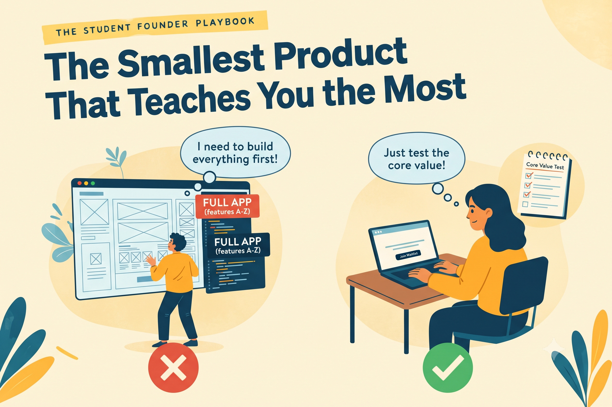

The Smallest Product That Teaches You the Most
EIC MBM
Published on September 29, 2026

The first version of a product exists to produce learning. A product that cannot be tested is not yet a product at all.
What a Minimum Viable Product Really Is
A minimum viable product is the smallest experiment that real users can interact with honestly. The word viable matters. The product must be good enough for people to actually use it, so that their feedback reflects real experience rather than confusion. A Google Form, a WhatsApp group, a shared spreadsheet, a hand-delivered service, or a landing page collecting sign-ups can all qualify.
What counts is that people take an action, and that you can observe what they do rather than what they say they would do. Behaviour is the only reliable evidence you will have at this stage. Everything else is an opinion, however sincerely it is offered.
Start with One Question
Before building anything, write down the single question the product must answer. Will students pay Rs 50 each week for verified notes? Will hostel students use a shared laundry tracker more than once in a month? A clear question gives the whole project a direction, and it makes decisions easier, because every feature can be judged by a simple test: does this help us answer the question?
Most early products fail not because the idea is wrong but because they try to answer too many questions at once. Logins, ratings, dashboards, and notifications all feel important, but each one consumes time and money without telling you whether the core idea works. Leave them out until the core idea has earned them.
Learning Before Software
Consider a student who wanted to start a tiffin service for hostel students. Instead of building a website or an app, he created a WhatsApp group and took orders for two weeks. He cooked from his own kitchen, delivered by hand, and kept a simple spreadsheet of what sold and what was left over. Within the first week he discovered that students reordered dal and rice far more often than the paneer dishes he had expected to be popular. He also learned that delivery before 1 pm mattered more than the menu itself.
Those two facts shaped his menu and his schedule in ways no survey could have predicted. Only after the service ran reliably did he consider building an app, and by then he knew precisely what the app needed to do. The software became a tool for a process he already understood, instead of a bet on an untested process.
The Trap of Building Too Much
Many founders spend months building features that nobody asked for. They tell themselves they need a complete product before anyone can fairly judge it. In reality, every week spent building something untested is a week you could have spent learning whether the idea works at all. A perfect product that nobody wants is still a failure, just a more expensive one. The remedy is a time limit. Give yourself two or three weeks to build the simplest version, and put it in front of people before the deadline arrives. If you cannot get it in front of anyone quickly, that often reveals how much the product depends on assumptions you have not yet tested, which is itself useful information.
Fake It Before You Build It
Many successful early products began with something that looked automated but was actually run by hand. A founder can accept orders through a form and fulfil them manually. A founder can present a single landing page describing a service and measure how many people click to join a waiting list. These approaches cost little and reveal demand quickly. If people will not tolerate a manual version, they are unlikely to tolerate the automated one either.
What to Measure Each Week
Track how many people tried the product, how many came back, how many paid or took the next step, and what they said when you asked. Record these numbers weekly, even when they look small. Patterns usually emerge faster than founders expect, and they point clearly toward the next decision. A small number of people who keep returning is far more useful than a large number who tried it once and disappeared.
Key Takeaway
The best first version is the cheapest thing that could prove your idea wrong.
Reflect
What single question must your product answer, and what observable result would tell you the answer?